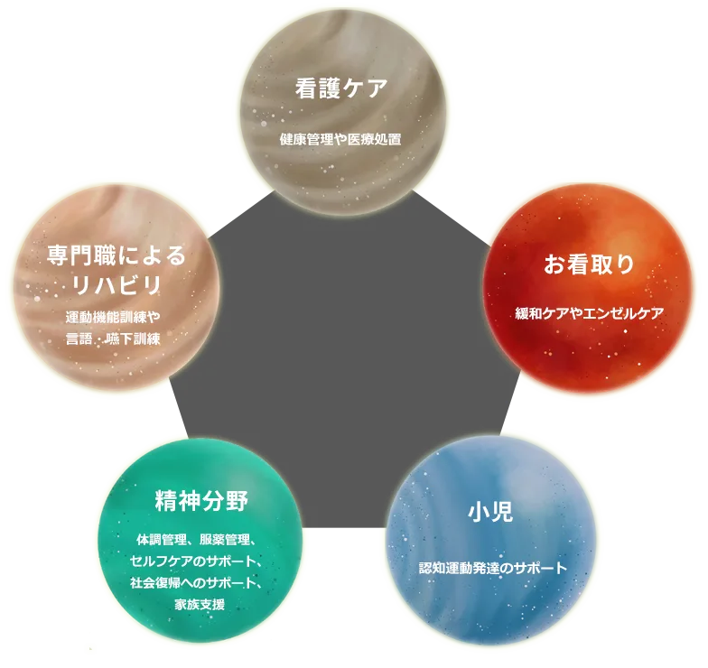
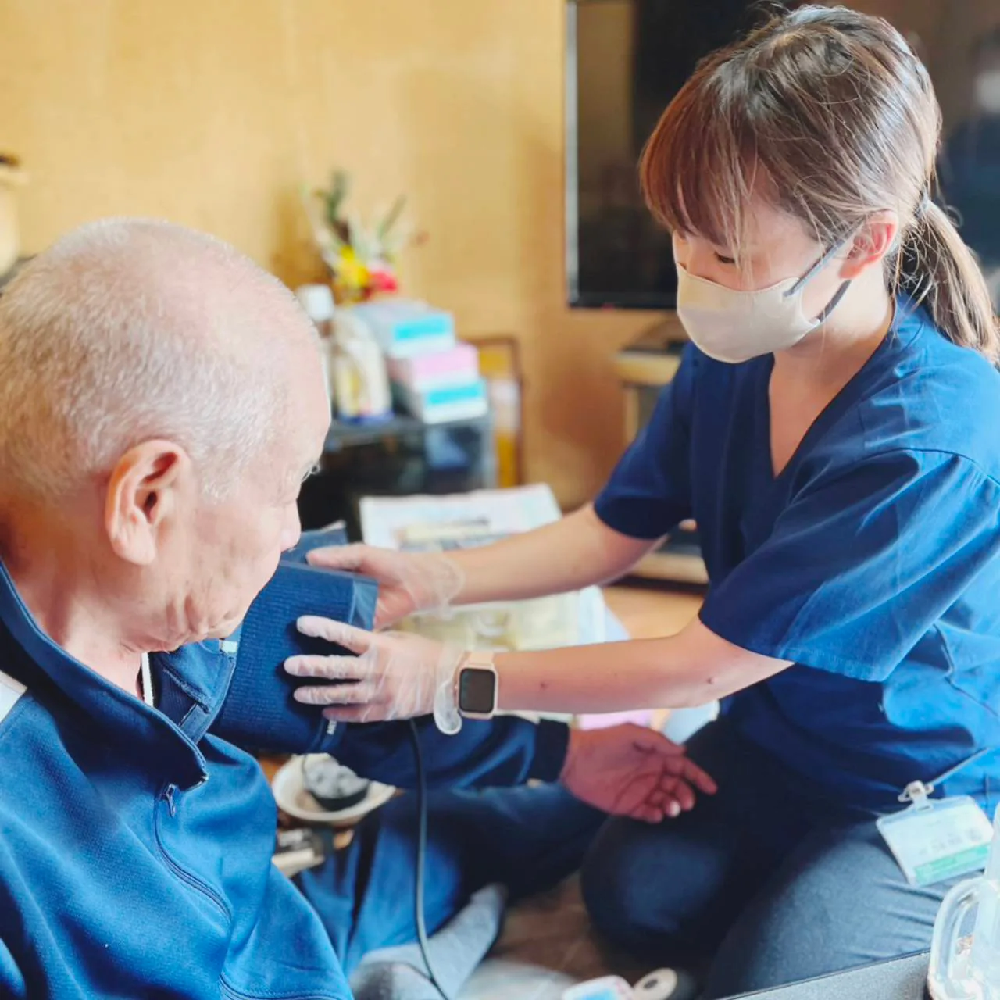
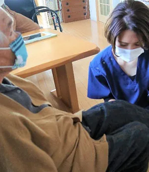
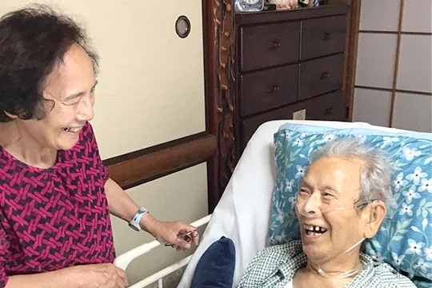
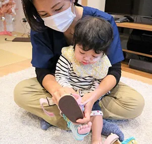
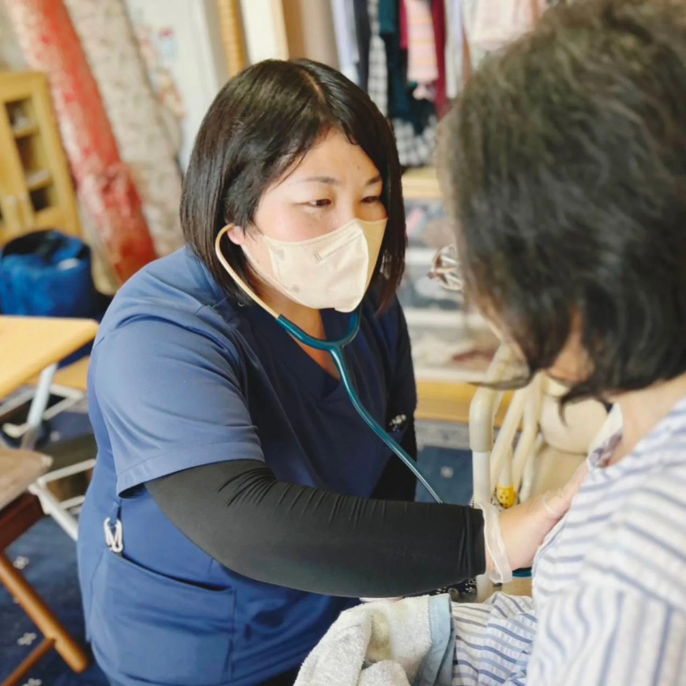

Service事業内容



看護ケア
地域のすべての「人」の自宅で過ごしたいを叶えます。24時間365日安心して自宅で過ごせるように、オーダーメイド看護を提供します。タブレット(電子カルテ)を使用することで、リアルタイムに情報共有ができるので、主治医・ケアマネージャーなど、多職種とも迅速に連携し、ご利用者様をサポートします。
こんなお悩みありませんか？
- 入退院を繰り返しており、健康状態のチェックや相談がしたい。
- 服薬管理ができない。
- 通院が困難で、受診のタイミングがわからない。
- 医療処置(吸引・吸入・在宅酸素・胃瘻・人工肛門など)を継続する必要がある。
- 排泄で困っている。(便・尿失禁、便秘、下痢など)
- 褥瘡(床ずれ)がある。
専門職によるリハビリ
基本動作や日常生活動作の訓練、嚥下や高次脳機能訓練など専門的なリハビリをマンツーマンで受けることができます。ご利用者様やご家族様が「今」必要としている生活上の問題点に対して、共に向き合いながら、目標を一緒に立てて実施していきます。看護師ともその場で連携を取れる体制を整えているため、ご利用者様の日々の些細な変化に気づきやすく状態異常の早期発見が可能です。

こんなお悩みありませんか？
- 転倒が増えた。
- デイには通っているが、最近体の動きが悪くなった。
- 外出の機会が少ない。
- ご家族の介護負担が、だんだん大きくなっている。
- 食事のときにムセてしまう。
- 言葉が出にくい。

お看取り
「自宅で最期を迎えたい」
家で過ごす選択肢を諦めていませんか？
その思いを叶える為に、どんな方でもチームでサポートいたします。
主な内容
- 往診医との密な連携
- 点滴、注射の実施・緩和ケア
- ご家族への支援(介護相談・精神面サポート)
- 生活の質の向上のためのリハビリテーション(車椅子で庭を見たい、苦しくない姿勢で過したい。など)
- エンゼルケア
小児
ご自宅でお子さんとご家族様が、安心安全に暮らせるよう、看護・リハビリスタッフがお手伝いを致します。集団生活での悩みを抱えているお子さんも、保育園や学校と連携をとりながら、ご自宅で療育・環境調整・サポートをしていきます。また、集団に入る前から「うちの子だけ育児が大変な気がする」「子供の発達で心配なことがある」などでお悩みの方も、お気軽にご相談ください。

主な内容
- 運動認知発達のサポート
- 食べる・おしゃべりをするサポート
- 福祉用具の選択と提案
- 学校・保育園・デイサービス等との連携

精神分野
精神疾患の診断を受けている、又は精神的な理由により看護ケアが必要であると医師が判断した方が対象となります。看護師がご自宅に訪問し、体調管理、服薬管理、セルフケアのサポート、社会復帰へのサポート、家族支援など、本人と家族が安心して在宅生活を送る為のサービスを提供します。
こんなお悩みありませんか？
- 保清や身だしなみ、身の回りの環境を整える、日常生活を送る事が大変
- 不安や焦り、気分の落ち込みが強い
感情のコントロールが難しい - 不眠傾向、昼夜逆転になってしまう
- 医師に言いたい事を上手く伝えられない
- 薬の管理やセルフケアが難しい
- 家族がどのように対応すればいいか悩んでいる